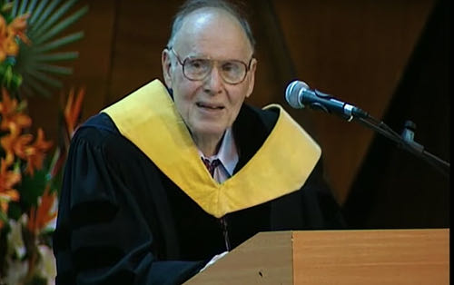

你好，欢迎来到《医学通识50讲》，我是薄世宁。
这节课，是疾病这个模块的最后一课。
咱们来说说衰老。
2018年诺贝尔物理学奖得主阿瑟·阿什金（Arthur Ashkin）在96岁获奖，是诺奖历史上获奖当时年龄最大的科学家。

这个人非常聪明。
他发明了激光镊子，可以捏住原子、分子、病毒这样的小东西，而且还不会损伤它们。这个发明一定会给未来的医学研究带来巨大贡献。
就这样一个聪明人，你猜他最担心什么呢？
怕死吗？毕竟快100岁的人了。
不怕。那他怕啥呢？
当诺奖工作人员给阿什金打电话，通知他获奖的时候，老爷子还在地下室写论文。
他说：“我希望得奖以后，我自己发表论文能容易点。那些编辑可能会说，阿什金是个聪明人，得过诺贝尔奖。最好发表他的论文。”
阿什金还说：
其实，他说出了咱们的心声。
现代医学刚诞生的时候，人类平均寿命是30岁，到今天平均预期寿命已经接近80岁了。
医学用200多年的时间让人类寿命延长了大约50岁，而且这种趋势还在持续。
咱们这代人很可能活到100多岁。但问题是，咱们肯定不想病恹恹地活到100岁。
那么，衰老是怎么回事呢？
这节课，我带你一起认识衰老。
有据支持的人类寿命极限是120岁
先说说人类的寿命极限。
根据已有的研究结果，最靠谱的结论是：人类寿命的极限是120岁。
有三个证据。
首先，人类历史上有证可考的最长寿人士，是一名法国女性，享年122岁。
其次，法国博物学家布丰（Georges Louis Leclere de Buffon）得出一个结论：物种寿命是生长期的5-7倍左右。
人类的生长期基本就到18岁，按照最高7倍推算，18乘以7等于126岁，与120岁接近。
另外，美国著名科学家海夫利克（Leonard Hayflick）发现，人类一生中细胞平均分裂次数为50次，每一次分裂产生的新细胞平均存活2.4年，50乘以2.4也等于120岁。
所以，如果没病、没灾、没意外，理论上人就有可能活到120岁。这是人类寿命的极限。
年龄只能反映衰老，不能定义衰老
听到这里你肯定很高兴。
但是，咱们经常听人说，岁数大了病就找上来，恢复起来也难，这就是衰老。
传统观念是把衰和老联系在一起的。
那么老就一定衰吗？未必。
2015年，我治疗过一个重症肺炎、呼吸衰竭的老奶奶，103岁。当时她已经气管插管，用上了呼吸机，我还给她下了病危通知书。
一般来说，病的严重程度和年龄相关。
75岁以上的老人治起来非常难。在病情这么重的情况下，几乎所有高龄病人的情况，都是一个器官还没治好，别的器官又出问题了。
原因你肯定知道，人老了，器官的代偿能力差了。所以死亡风险非常高。
但是这个病人不同，她对药物的反应很好。在病床上躺了两周，身上一点都不肿，咳嗽力量也大。
后来她的肺炎治愈了，拔了气管插管，高高兴兴回家了。
直到今天我都一直在想：这个病人不是我治得好，而是她只是老，但并不衰。
这个病人尽管103岁，但是长得却没那么老，咳嗽力量非常大。咳嗽，就是针对肺炎最好的自我修复能力。所以她能抵御疾病并且从中修复。
这是一个老而不衰的病例。
我们医院还治疗过一个早老症的病人。14岁的年龄，但是身体已经老化，面容苍老，眼球内陷，皮肤全是皱褶。
这种罕见病，身体老化速度是正常人的5-10倍。这个病人虽然不老，但是身体已经衰了。
这两个病例说明，衰老速度在个体之间存在显著差异。
多数时候，年龄大小可以在一定程度上反映衰老的程度。但是衰老的本质，却不是年龄大。
衰老的本质：自我修复能力下降
进化论认为，衰老是年轻必须付出的代价，有助于整个物种的生存和繁衍，毕竟地球资源有限。
这么说很有道理。
但是话说回来，如果让人赶紧变老，死了之后赶紧给后代腾地方。那肯定没人愿意。
所以，我们有必要了解衰老的机制，以及怎么延缓衰老。
我把人类研究衰老的最新进展，总结了三个层面：
衰老的第一个层面：基因损伤。
在前面的课程里讲过，很多因素会引起基因突变，基因突变就是一种损伤。
比如，细胞分裂的时候会有突变，接触紫外线、化学物质，人体产生的自由基也会引起基因损伤。
随着年龄增长，这些损伤就会逐步累积和叠加。如果这种基因突变发生在关键位点上，就会变成癌症基因。
从这个角度看，癌症就是衰老的一种表现形式。
基因损伤的累积越来越多，就像染色体长满了伤疤一样，就会影响细胞的功能。
衰老的第二个层面：细胞功能异常。
细胞功能异常会表现为很多方面：
比如，内分泌腺体分泌激素越来越少。女性雌激素水平下降，就会引起皮肤弹性下降、皮肤干燥、月经紊乱和骨质疏松。
再比如，细胞利用营养物质的能力也会下降。会出现糖尿病、高血脂。所以，这类病人并不完全是营养物质摄入过多，同时还有利用障碍。
另外，人体还会产生很多衰老细胞和有害的蛋白质，短时间内清除不掉。
比如，阿尔茨海默症病人的大脑里面，会沉积很多淀粉样蛋白和衰老细胞。
这些物质不仅“占着地方不干活”，还会引发慢性炎症反应，进一步加速阿尔茨海默症的发展。
无论是激素水平下降，利用营养物质的能力下降，还是清除衰老物质的能力下降，这些都是细胞功能下降的表现。
但是我们说过，人体可以自我修复。
刚才提到的103岁的老人，得了重症肺炎却能很快痊愈，靠的就是自我修复。
衰老的第三个层面：只有自我修复能力下降了，才是真的衰。
我们看看人体有哪些自我修复能力。
比如，基因损伤可以自我修复。
比如，深度睡眠的时候，大脑神经胶质细胞的体积可以缩小60%。就是为了给大脑内的液体留出空间，加快液体循环，清除衰老物质。这也是自我修复。
再比如，细胞损伤或者死亡之后，人体的干细胞会加快分裂，补充坏死的细胞。这还是自我修复。
只有自我修复能力下降了，它没办法修复基因损伤，没办法恢复细胞功能的时候，才是真的衰了。
所以，衰老的本质不是年龄，而是自我修复能力的下降。
毫无疑问，衰老带来了很多问题。
比如皮肤皱纹，行动能力下降，免疫力低，得了病很难痊愈，记忆力也会下降。
这是自然现象。
我认为，现代医学的进步让咱们有能力和很多慢性病对抗。在未来，医学可以帮助高龄的人解决很多躯体上的问题。
但是，目前最难解决的问题，是衰老带来的认知能力下降。
延缓衰老：激发自我修复和代偿
有一种严重危害老年人智力和身体的病——阿尔茨海默症。目前，中国阿尔茨海默症的患者有1000万左右。
有一个比喻：阿尔茨海默症的病人，他的大脑就像被什么东西慢慢吃掉一样。就这么一路地走向衰，走向亡。
对于导致这个病的因素，有的研究认为是大脑里的衰老细胞，也有的研究认为是口腔内的微生物。
但是直到今天，医学还没有搞清楚确切的发病机制。所以，目前也缺乏对于这个病的特效药物。
医学总会有攻克阿尔茨海默症的那一天。对于这个病，我也提不出太多的建议。
但是，我们可以延缓因为年龄增大而引起的认知能力下降。
心理学家把人的智力分成晶体智力和流体智力。
晶体智力是后天获得的认知能力。
比如学会的某种技能、语言文字能力、判断力、联想力等等。晶体智力不会随着年龄下降。
流体智力是一种先天的能力。
比如记忆力、运算速度、推理能力等。这种智力是有生理基础的，所以，它在30岁以后会逐步下降。
我个人认为，既然流体智力有生理基础，那么咱们利用有效的方法延缓生理衰老，很可能有利于减慢流体智力的衰退速度。
比如，节食。少吃有利于清除大脑里的衰老细胞。
比如，运动可以帮助咱们清除体内废物，增强自我修复能力和代偿能力。
再比如，戒烟限酒可以减少基因损伤，也就是减慢了衰老的速度。
在抗衰老药物方面，目前美国FDA已经批准了药物做人体试验。再过3-5年可能会有结果，如果有效，对每个人都是福音。
毫无疑问，咱们这代人可以活得更久。但是，要让生命更精彩还得靠自己。
下章预告
下节课我们进入新的一章——《医学演化的里程碑》。你将学到对医学产生巨大变革的技术和制度。